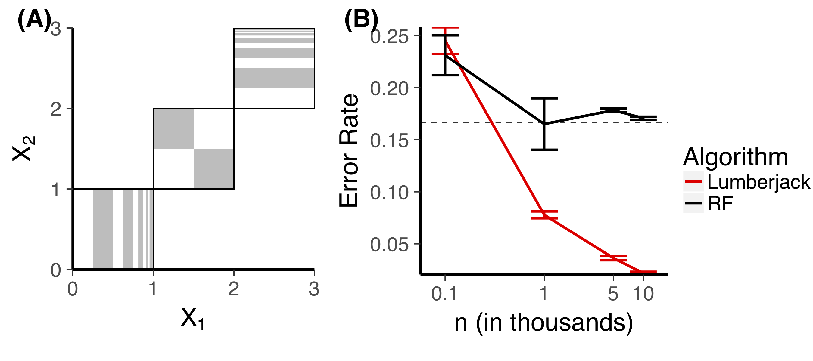
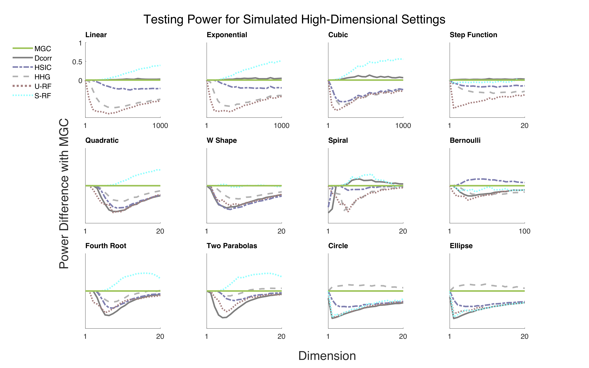

class: left, name:opening ## Lifelong Learning Forests PI: Joshua T. Vogelstein, Co-PIs: Carey E. Priebe, Randal Burns <br><br><br> <img src="images/funding/jhu_bme_blue.png" STYLE="HEIGHT:95px;"/> <img src="images/funding/KNDI.png" STYLE="HEIGHT:95px;"/> .foot[[jovo@jhu.edu](mailto:jovo at jhu dot edu) | <http://neurodata.io/talks/L2F_6mo.html>] --- # Outline - Background - Methods Update - Applications Update - Discussion --- # Background --- ### Decision Forests Empirically Rock! - Caruana et al. 2006 (ICML): "With excellent performance on all eight metrics, calibrated .r[boosted trees] were the best learning algorithm overall. .r[Random forests] are close second." - Caruana et al. 2008 (ICML): "the method that performs consistently well across all dimensions is .r[random forests]." - Delgado et al. 2014 (JMLR): "The classifiers most likely to be the bests are the .r[random forest]." - Chen et al. 2016 (KDD): "Among the 29 challenge winning solutions published at Kaggle’s blog during 2015, 17 solutions used .r[XGBoost]. Among these solutions, eight solely used .r[XGBoost] to train the model" --- ### Decision Forests Theoretically Rock! 2. **Consistency** under certain assumptions 3. **Efficiency** error scales with order 1/n 1. **Uncertainty** provide consistent estimate of posteriors 4. **Flexibility** can learn simple or complex functions 4. **Stability** are robust 5. **Scalability** linear in n, p, and 1/T 6. **Explainability** feature importance available 7. **Automaticity** very few parameters to tweak --- ### LumberJack (LJ) <img src="images/rerf_perf.png" style="width: 800px;"/> - previously known as [Randomer Forest](https://arxiv.org/abs/1506.03410) - replace feature selection with very sparse random projection - significant empirical improvement over RF/XGBboost - maintains all 8 theoretical properties above - but are not lifelong learners --- ### Lifelong Learning Forests (L2F) Extend LumberJack to maintain all the above properties, and continue improving empirically even after things change (with or without labels). #### Route 1. Prove Universal Consistency of LJ (with empirical support) 2. Prove Universal Kernel induced by LJ (with empirical support) 3. Prove LJ Kernel is Robust to noise dimensions (and therefore, changes in them, with empirical support) 4. Prove LJ Kernel is updated when signal changes too (rest of Phase I) --- ### Quick Primer on Decision Forests - given n samples from data in p dimensions - for each tree - subsample m samples - for each leaf node - randomly sample/generate p features - choose the feature/split the best "fits" the data - step when further splitting does not help --- ### Result 1: *Universal* Consistency of LJ  Conjecture 1: Lumberjack is at least as consistent as RF. -- "Thm" 1: LJ is *more* consistent than RF. --- ### Result 2: Induced *Universal* Kernel - Universal kernels are foundational in machine learning (e.g., Boltzman Machines, Deep Boltzman Machines) - Existing kernels are pre-defined / inflexible -- - LJ induced kernel: the proximity between a pair of points is the fraction of trees for which that pair lies in the same terminal node. - Conjecture 2: the LJ induced kernel is universal. -- "Thm" 2: The kernel induced by RF/LJ can trivially be modified to be universal. --- #### Learned Kernel > "Pre-Specified" Kernels  --- #### Result 3: LJ Kernel is Robust to High-Dimensional Noise --- ### Hardy Weinberg Curve - $t_i \sim Beta(\alpha,\beta$) - $x_i = [(t_i)^2, (1- t_i) t_i, (1-t_i)^2]$ - 3D embedding of CMDS recovers latent manifold <img src="images/EUC_DIS_CMDS_d=0.png" style="height: 400px;"/> --- ### Hardy Weinberg Curve with Noise - $x_i \leftarrow [x_i,$ 17 dimensions of noise] - 3D embedding of CMDS recovers all .r[noise] <img src="images/EUC_DIS_CMDS_d=17.png" style="height: 400px;"/> --- ### Hardy Weinberg Curve with Noise - $x_i \leftarrow [x_i,$ 17 dimensions of noise] - 3D embedding of RF learned kernel recovers all ".r[manifold]" <img src="images/projected-normalnoise-hw-data-500trees-2000pts-17noisedims-depth4.jpeg" style="height: 400px;"/> --- ### Noise Dimensions Theorem "Thm" 3: Nearest neighbors are robust to added noise dimensions --- ### Summary of Methods Update - L2M with theoretical guarantees requires: - Universal Consistency - A Kernel that learns - Learned Kernel must be universal (or nearly) - We showed - Lumberjack has all 3 of those - Empirical ramifications even for static learning --- # Applications --- ### \#1: Characterizing Psychopathy with Changing Sensors - 10 years of scanning psychopaths (multi-modality) - Frequent scanner updates meticulously documented (changing sensors) - Task: Estimate recidivism using the first n samples, then improve accuracy including m additional unlabeled samples - Status: - 4,000+ individuals so far - All participants have detailed clinical assessments (i.e., mental health, IQ, neuropsych) - All participants complete structural (T1/T2-FLAIR), Diffusion, Resting state and fMRI - Detailed outcomes data being collected to examine risk for crime (property, nonviolent, violent, sexually violent). - Data organized and ready to be processed - Data wrangling code is ready to run --- <img src="images/MRN_bus.png" style="position:absolute; left:-2px; width:920px;"/> --- ### \#2: Characterizing Personality in Non-Stationary Life Span Data - Lifespan data: 9-90 - Certain phenotypics are fixed (e.g., ethnicity, gender, IQ) - Multimodal brain measurements are dynamic with age - Task: Predict phenotypic properties using pediatric data, then improve accuracy using geriatric data - Status: - 180 individuals scanned - 171 processed - basic demographics available for each - age, sex, handedness, race, etc. - predictions are ready to be made --- ### Next Steps - Complete wrangling of all image and phenotypic data - Train LJ on "early" data - Continue learning using additional data - Benchmark performance vs. using full data --- <div class="background"> <img src="images/lion_l2m.JPG" STYLE="position:absolute; TOP:0px; LEFT: 0px; HEIGHT:680px; WIDTH=600px;"> <div class="bottom-center"> <h1>#3: Lion</p></h1> </div> </div> --- ### References - Lumberjack [[1]](https://arxiv.org/abs/1506.03410) - The Exact Equivalence of Distance and Kernel Methods for Hypothesis Testing [[2]](https://arxiv.org/abs/1806.05514) - Forest Packing: Fast, Parallel Decision Forests [[3]](https://arxiv.org/abs/1806.07300) - Kernel k-Groups via Hartigan's Method [[4]](https://arxiv.org/abs/1710.09859) - From Distance Correlation to Multiscale Graph Correlation [[5]](https://arxiv.org/abs/1710.09768) (in press at JASA) - Lumberjack R package: [CRAN](https://cran.r-project.org/web/packages/rerf/index.html) --- class: top, left ### Acknowledgements <div class="container"> <img src="faces/cep.png"/> <div class="centered">Carey Priebe</div> </div> <div class="container"> <img src="faces/randal.jpg"/> <div class="centered">Randal Burns</div> </div> <div class="container"> <img src="faces/cshen.jpg"/> <div class="centered">Cencheng Shen</div> </div> <div class="container"> <img src="faces/minh.jpg"/> <div class="centered">Minh Tang</div> </div> <div class="container"> <img src="faces/percy.jpg"/> <div class="centered">Percy Li</div> </div> <div class="container"> <img src="faces/tyler.jpg"/> <div class="centered">Tyler Tomita</div> </div> <div class="container"> <img src="faces/james.jpg"/> <div class="centered">James Browne</div> </div> <div class="container"> <img src="faces/falk_ben.jpg"/> <div class="centered">Ben Falk</div> </div> <div class="container"> <img src="faces/jesse.jpg"/> <div class="centered">Jesse Patsolic</div> </div> <div class="container"> <img src="faces/loftus.jpg"/> <div class="centered">Alex Loftus</div> </div> <div class="container"> <div class="centered">Veronika Strnadova</div> </div> <span style="font-size:200%; color:red;">♥, 🦁, 👪, 🌎, 🌌</span> <!-- <img src="images/funding/nsf_fpo.png" STYLE="HEIGHT:95px;"/> --> <!-- <img src="images/funding/nih_fpo.png" STYLE="HEIGHT:95px;"/> --> <img src="images/funding/darpa_fpo.png" STYLE=" HEIGHT:95px;"/> <!-- <img src="images/funding/iarpa_fpo.jpg" STYLE="HEIGHT:95px;"/> --> <!-- <img src="images/funding/KAVLI.jpg" STYLE="HEIGHT:95px;"/> --> <!-- <img src="images/funding/schmidt.jpg" STYLE="HEIGHT:95px;"/> --> ### Questions?